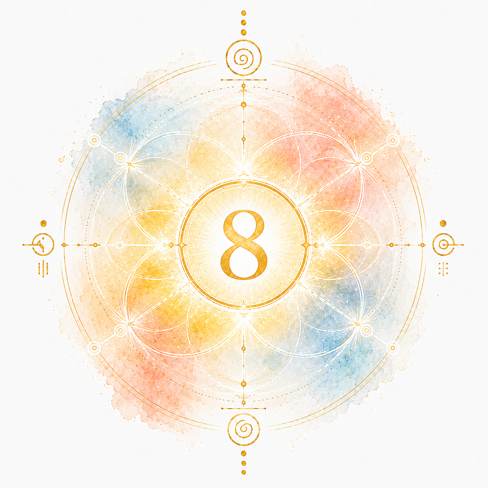

調和・共鳴・つながり
マヤ暦の銀河の音は1〜13の数字で、太陽の紋章とセットになってKIN番号を構成する要素です。音8は「行動パターン」「人生のリズム」「学びのスタイル」を象徴します。
自分の音を診断する →音8は「調和・共鳴・有機的なつながり」を象徴する音です。この音を持つあなたは、世話焼きで面倒見のよい存在感を持ち、自然と周囲の人が集まってくるタイプです。指令塔・コーディネーターとしての才能があり、「誰に何をしてもらうか」を見極めて役割を分配する力に優れています。動物との共鳴が強い音でもあり、ペットを飼うことやいきものと関わる環境がこの音のエネルギーを高めます。共鳴する人がいると一気に能力が上がるという特性があるため、気の合う仲間との協働が才能を最大化するカギになります。
自分の思いが強く出やすい面があるため、相手の長所を意識して見るようにすることが人間関係の質を高めます。ワクワクすることや楽しいことを人生に積極的に取り込むことがこの音の開運行動です。こだわりが強くなりすぎたときは、固執せずに手放す勇さを意識しましょう。有機物・自然・生き物・食・医療・農業など、命あるものと関わる仕事が最も適性を発揮できる分野です。熱中しすぎる時期には精神的に疲れやすい傾向があるため、休息とメリハリを大切にしましょう。
あなたの銀河の音は、生年月日を入れるだけで分かります。
無料でKINを診断する →もっと深くマヤ暦を知りたい方へ